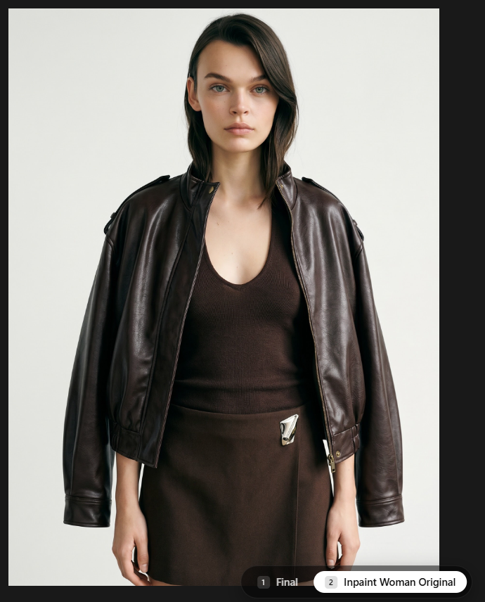
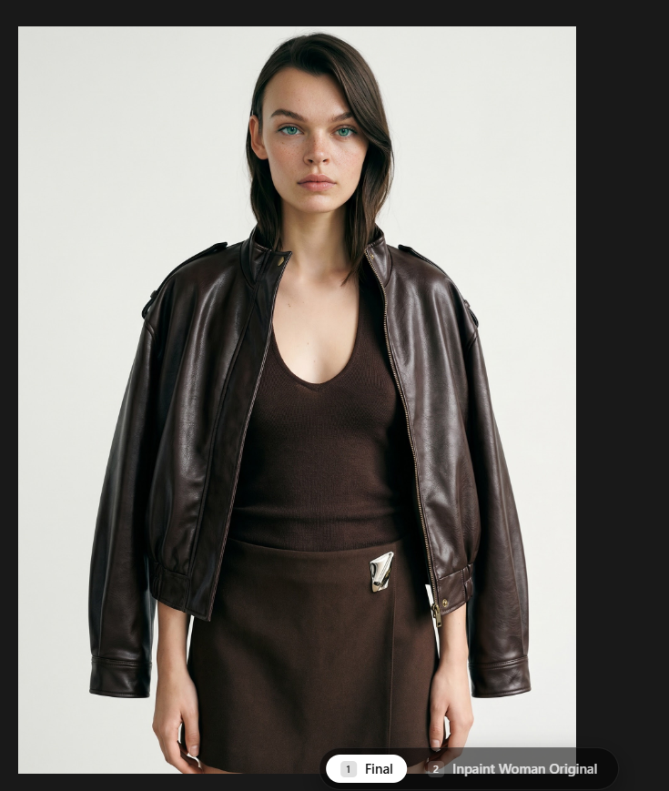
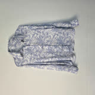
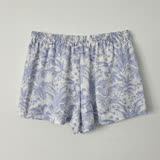

www.astria.ai/prompts?ws=6
ASTRIA
Templates
Prompts
Tunes
Workspaces
Face Inpainting · Workspace 6
Editorial portrait test, references pinned
RESULT WILL APPEAR HERE


1
Final
2
Inpaint Woman Original
female model (woman)
×

Zara shirt (shirt)
×

pants blue print (pants)
×
+
Nano Banana 2 — Gemini 3.1 Flash
▾
3:4
▾
2K
▾
1
▾
Inpaint faces
×
Describe
▾
↗
Inpaint faces enabled